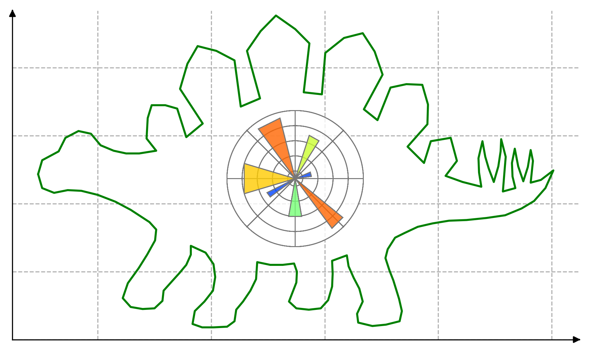
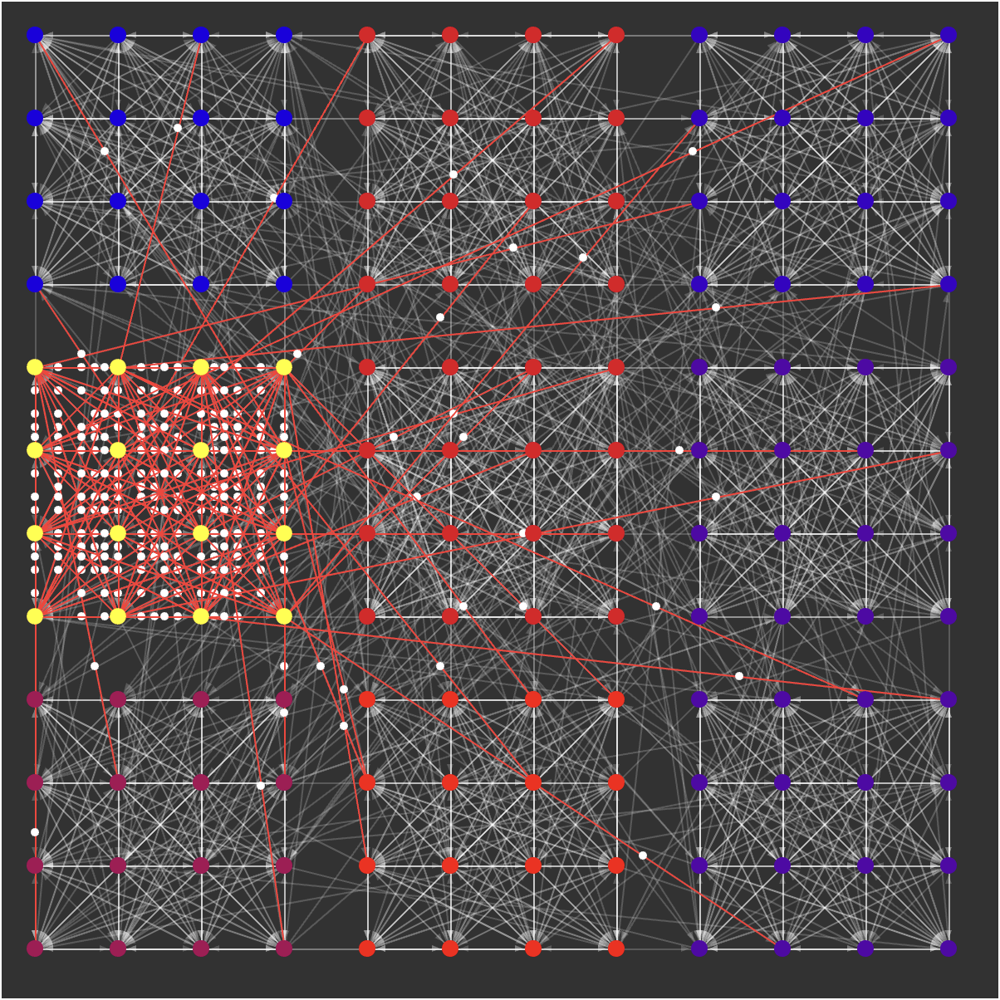

Stegaplots: hiding meta-data in matplotlib images.
Don't you hate it when you have an image of some cool experiment you ran but no idea how you made it?. Maybe you tried to save some info about how to reproduce it but god only knows where that file went? What if you stored all the information you need INSIDE the image itself? 🤯
OneSearch.nvim: the (approximately) one trick pony of neovim search
There are many search plugins for vim but they have so many different features and getting them to do exactly what I want is more difficult than writing my own. So I wrote my own. Few features I use all the time and strong opinions. Have fun.

A peek into NeuroModularity

What happens when signals propagate in clusters of spiking neurons? Let's find out.